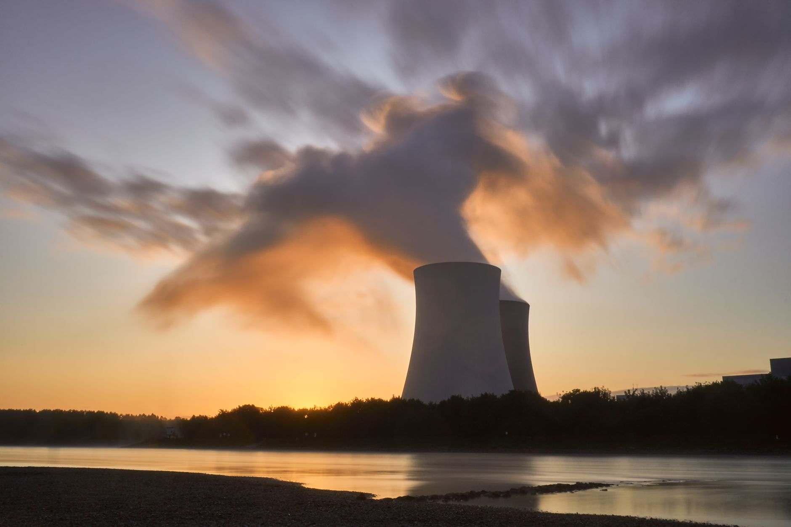

한불 정상, 방산→SMR·AI·반도체 동맹 선언

[자료사진] 기사와 무관한 이미지입니다.
2026년 9월 한불 정상회담에서 양국은 방산(잠수함·미사일)에서 AI·반도체·SMR·우주 분야로 전략산업 협력을 공식 확대했다. 프랑스 EDF의 SMR(소형모듈원자로) 기술과 한국수력원자력의 시공 역량을 결합하는 공동 개발 협력이 의제로 올랐다.
삼성전자는 이미 프랑스 AI 스타트업 미스트랄AI에 전략적 지분 투자를 완료했다. 미스트랄AI는 유럽 최대 LLM 플랫폼으로 2025년 기업가치가 60억 달러(약 8조 원)를 넘었다. 삼성 파운드리가 미스트랄 추론칩 생산을 맡을 경우, 유럽 AI 반도체 수주의 교두보가 된다.
프랑스는 2025년 기준 EU 반도체법(Chips Act) 내 설계 강국이지만 파운드리가 없다. 한국은 파운드리 생산 역량은 있으나 유럽 시장 수주 채널이 취약하다. 이 구조적 보완이 양국 기술 협력의 실질적 동인이다.
SMR 분야에서 한국은 2012년 SMART 원자로 표준설계 인가를 받은 유일한 비서방 국가다. EDF가 개발 중인 Nuward SMR(170MW급)과 한국 기술의 결합 시 제3국(동남아·중동) 수출 경쟁력이 강화된다. 전 세계 SMR 시장은 2035년 1,500억 달러 규모로 성장이 예상된다.
한불 협력의 핵심은 '미중 어느 편도 아닌 제3의 기술 축'이다. 프랑스는 미국 팹리스-중국 제조 의존 구조에서 벗어나고 싶어하고, 한국은 미중 이분법 속에서 유럽 시장 수주 채널이 절실하다. 공급망 다변화라는 목표가 양국 이익을 정확히 교차시킨다.
SMR은 단순 에너지원이 아니라 AI 데이터센터 전력 문제의 중기 해법이다. 마이크로소프트가 미국에서 SMR 전력 계약을 체결한 것처럼, 유럽 하이퍼스케일러도 SMR 전력 확보에 나설 경우 한불 공동 SMR이 데이터센터 전력 공급 계약으로 이어질 수 있다. 이 연결 고리가 현재 가장 저평가된 시나리오다.
두산에너빌리티와 한전기술은 SMR 협력의 직접 수혜 후보다. 두산에너빌리티는 이미 미국 뉴스케일 SMR 주기기 공급 계약을 체결했으며, EDF Nuward와 기술 협력이 추가되면 유럽·중동 수주 포트폴리오가 다변화된다.
한국 팹리스·IP 설계사도 수혜를 볼 수 있다. 미스트랄AI 생태계가 확장될수록 유럽 AI 칩 설계 수요가 증가하고, 삼성 파운드리가 이를 흡수하는 구조에서 국내 칩 설계 협력사도 유럽 레퍼런스를 확보할 기회가 생긴다.
TSMC와 인텔 파운드리는 한불 반도체 협력이 구체화될 경우 유럽 AI 칩 수주 경쟁에서 삼성과 직접 맞붙어야 한다. TSMC는 독일 드레스덴 팹 건설 중이지만 2027년 이전 양산은 어렵고, 그 공백을 삼성이 미스트랄 네트워크로 선점할 수 있다.
중국 화웨이·CXMT 등 중국 반도체 기업은 EU의 기술 협력 네트워크에서 구조적으로 배제된다. 유럽이 신뢰 가능한 공급망 파트너로 한국을 택하면 중국의 유럽 반도체 시장 진입 경로가 추가로 좁아진다.
소부장 기업과 중소 파운드리 협력사는 프랑스 CEA(원자력청) 및 미스트랄AI 협력 프로그램 참여를 2026년 내 타진해야 한다. EU의 '유럽 반도체법' 보조금 수혜 요건에 '신뢰 공급망 파트너' 조항이 있으며, 한불 MOU 체결 기업이 우선 심사 대상이 될 가능성이 있다.
SMR 밸류체인 투자자는 두산에너빌리티·한전기술·비에이치아이(열교환기) 외에 SMR 냉각재·특수 배관 소재 공급사를 눈여겨봐야 한다. 협력 프레임이 구체화되면 소재 조달 계약이 먼저 체결되고, 주가 반응은 그 이후에 온다.
실제 조달 현장에서는 — 정상회담 이후 양해각서(MOU)가 체결되면 실제 소재·부품 조달 발주까지 통상 18~36개월이 걸린다. 이 공백기에 납품 레퍼런스 없이 입찰에 참여하면 자격 심사에서 탈락한다. 지금 당장 유럽 파트너사에 기술 샘플을 먼저 보내고 인증 트랙을 가동하는 것이 MOU 공시 이후 움직이는 것보다 2년을 앞서는 전략이다.
이 포스팅은 쿠팡 파트너스 활동의 일환으로 수수료를 제공받습니다.